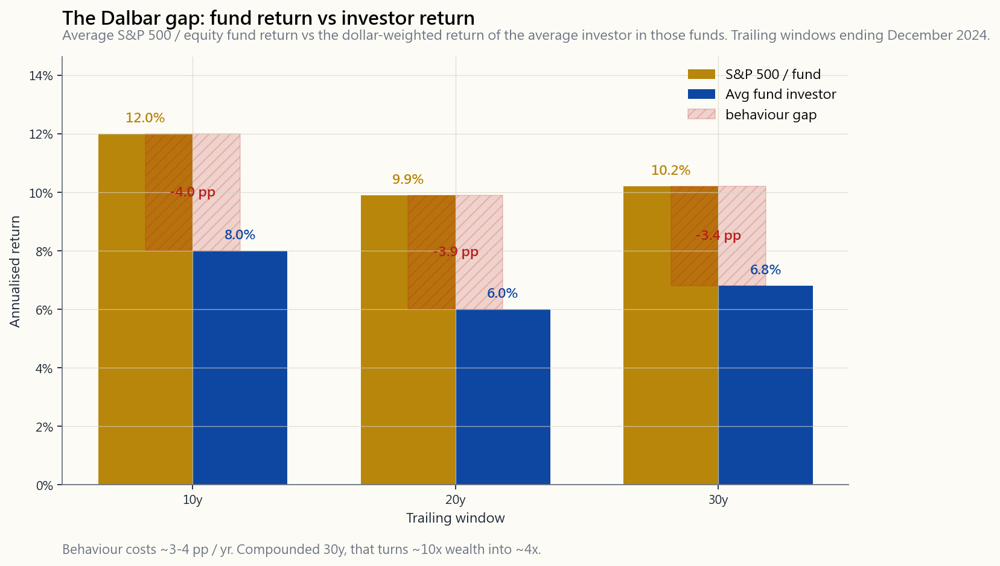
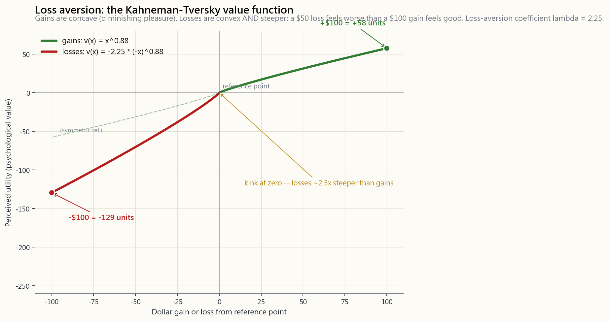

Week 11: Behavioral Biases and Rebalancing — Rules That Protect You From Yourself
1. Why This Is Important
Every portfolio in this course is two things at once: the strategy written down in the spreadsheet, and the behaviour of the human who has to hold it through a 35% drawdown, a screaming headline, and a brother-in-law who just tripled his money in a meme stock. Most of investing's documented underperformance does not come from picking the wrong fund. It comes from the gap between what the spreadsheet recommends and what the human actually does.
You need to understand behavioural biases for four reasons.
The DALBAR QAIB studies have followed actual cash flows in and out of US equity mutual funds for thirty years. The headline finding, replicated every year, is that the average equity-fund investor earns roughly 2 to 4 percentage points per year less than the fund itself. The fund didn't underperform. The investor did, by buying after rallies and selling after drawdowns. Compounded over thirty years, that gap eats more than half the terminal wealth. The strategy was fine. The hand on the keyboard was not.
The classic Keynes warning: even when you are correctly identifying a mispricing, the price can move further against you for longer than you can finance the position. Behavioural biases are the mechanism that creates those long irrational stretches — it is the herd's loss aversion and FOMO that drives a bubble for an extra two years past where the spreadsheet said it should have ended. If you don't understand herd behaviour, you don't understand why the trade you got right on Day 1 still blew you up by Day 500.
builds.** The volatility tail wags the portfolio dog. Overconfident investors take more leverage than their conviction warrants, because the bell-curve model in their head puts the next −30% year at "once in a century." It isn't. Pre-2008 leverage was a textbook overconfidence-meets-fat-tail pairing, and individual investors are running the same trade today, just with smaller decimal points.
important paragraph in the lesson. Reading about loss aversion does not make you immune to loss aversion. Even Kahneman, who won the Nobel Prize for naming it, said in interviews that he still feels the asymmetry as strongly as he did at twenty. The bias is wired in. The only durable fix is system design — automate the contributions, automate the rebalance, *remove the discretion*, and accept that on the days you most want to override the system, the system is most right and you are most wrong.
This lesson covers loss aversion, recency bias, anchoring, herding and FOMO, the disposition effect, narrative fallacy, and overconfidence — the seven behaviours that, between them, account for nearly all of the Dalbar gap. Then it covers the single most powerful counter-system to those biases: rebalancing. Rebalancing is usually taught as portfolio mechanics. It is more honestly understood as a behavioural rule — a pre-committed instruction that forces you to do the right trade at the moment your wired-in biases would have you do the opposite. We close on the broader set of system designs (automated contributions, written policy statements, position-size limits) that work because they take the decision out of your hands.
2. What You Need to Know
2.1 The Dalbar Gap — How Much Behaviour Costs
The DALBAR Quantitative Analysis of Investor Behavior (QAIB) study compares two return series: the time-weighted return of the average US equity mutual fund (what the fund actually delivered) and the dollar-weighted return of the average investor in those funds (what the investor actually earned, given the timing of their contributions and redemptions). The gap between them is pure behaviour.

The gap is not random fees or fund-selection. Two-thirds of it is sequence-of-flows: investors put more money in after the market has run, and they pull money out after it has fallen. The remaining third is fund-shifting (jumping from the year's loser to the year's winner) and panic exits. Compounded over a thirty-year career at 3.5% per year, the behavioural drag turns a 10x wealth multiple into roughly a 4x one. **The single most expensive financial mistake the typical retail investor makes is not which fund they pick — it is when they buy and sell.**
2.2 Loss Aversion — The 2.5x Asymmetry
The foundational bias, named by Daniel Kahneman and Amos Tversky in their 1979 prospect-theory paper. The pain of losing $100 is roughly 2 to 2.5x as intense as the pleasure of gaining $100. Their value function looks like this:

Three consequences for portfolio behaviour:
- Holding losers, selling winners. Closing a losing position
- Aversion to drawdowns at the strategy level. A 60/40 portfolio
- The wrong volatility check. Loss aversion makes investors
2.3 Recency Bias — The Last Year Predicts Forever
Recency bias is the tendency to extrapolate the most recent experience as the new permanent state. When stocks have just returned 25% for two years running, your brain quietly resets the expected-return prior to "stocks return 25%." When they've been flat for three years, the prior resets to "the era of stock returns is over." The actual long-run distribution does neither.
This is why the worst time to raise your equity allocation is after a great equity decade — the regime that produced those returns is already priced into current valuations, and your forward expected return is lower, not higher. And the worst time to cut equity is after a 30% drawdown — the forward expected return after the drawdown is higher, because prices fell faster than fundamentals. Recency bias has the wrong sign in both cases. Every time.
The 1999 retail allocation to internet stocks was peak recency bias. The 2009 retail flight to cash was peak recency bias. The 2021 retail allocation to crypto and meme stocks was peak recency bias. The pattern repeats because the wiring repeats.
2.4 Anchoring — Why Your Cost Basis Should Not Exist on Your Screen
Anchoring is the brain's tendency to over-weight the first number it encountered as a reference point. In investing, the anchor is almost always your cost basis — the price you paid. Cost basis is relevant for tax purposes. It is irrelevant for *should I hold this* purposes.
The honest framework is the inheritance test: if you inherited this position today at the current market price, with no cost basis attached, would you choose to hold it? If yes, the anchor is noise. If no, you are only holding because of the anchor — and the anchor is a bookkeeping artefact, not a piece of investment thesis.
Other anchors that infect retail portfolios: the 52-week high ("it was 30% higher last year, so it must come back"); the IPO price ("it must be worth at least the IPO price"); a round number ($100, $1,000); a friend's cost basis. None of these have any information content about the current fair value. All of them distort your hold/sell decision.
2.5 Herding and FOMO — The Beauty Contest
Keynes' beauty-contest analogy is the cleanest description of herding ever written: the investing game is not picking the prettiest face, it is picking the face *the average voter* will pick — and the average voter is in turn picking what they expect the average voter to pick, all the way down. The correctness of the underlying valuation is many layers removed from the proximate driver of price.
Herding has two flavours and they reinforce each other:
- FOMO (fear of missing out). Watching neighbours, coworkers,
- Capitulation. The mirror image: when everyone else is
The reason herding behaviour creates the long irrational stretches that bankrupt good traders is exactly the beauty-contest mechanism: even correct contrarians can be early by years, and being right on Day 1 doesn't help if you can't finance the position to Day 500.
2.6 Narrative Fallacy and Overconfidence
Two related biases that compound each other.
Narrative fallacy — the brain's preference for a clean causal story over a noisy statistical one. Every 1% market move on the news is paired with a confidently-stated reason. *"Stocks rose on strong earnings." "Stocks fell on rate fears."* These narratives are post-hoc fits to noise. The actual driver of any given day's move is rarely a single clean reason; usually it is the chaotic sum of millions of independent decisions, some on data, some on flows, some on liquidity, most on nothing in particular. Treating the day's narrative as causally informative builds a false picture of how markets work.
Overconfidence — the tendency to over-estimate one's own prediction precision. The classic finding: when investors say they are 90% sure of a forecast, they are right 70% of the time. Combined with narrative fallacy, this builds a portfolio of high conviction in stories that are mostly noise. Two specific manifestations:
brokerage records found that the highest-turnover quintile underperformed the lowest by roughly 6 percentage points per year. Every trade is an act of confidence; over-confidence manifests as over-trading.
to hold ten names instead of five hundred. The ten names carry the same expected return as the index but vastly more idiosyncratic risk — the textbook free-lunch anti-portfolio.
2.7 Why Knowing Doesn't Cure — System Design Beats Willpower
This is the part of the lesson that survives the rest. The biases are not solved by being smarter. They are solved by *taking the decision out of your hands at the moments your hands are worst*.
Concrete system designs:
- Automatic monthly contributions that bypass the brain. The
- Rules-based rebalancing on a fixed calendar (annually or
- Long horizons announced in advance. "I will not look at this
- Position-sizing rules instead of conviction-sizing. A
- A written investment policy statement that pre-commits how
The interactive panel at the bottom of this lesson lets you toggle on and off four classic bias-driven actions ("sell after a 20% drawdown", "buy after a 20% rally", "switch to bonds after two down years", "chase last year's winner") and watch what they do to a 1928–2024 backtest against simple buy-and-hold. The pattern in every combination is the same: the bias-driven version underperforms, by roughly the Dalbar-gap-size or worse, in nearly every parameter combination. Behaviour is the most expensive line item in the portfolio.
2.8 Rebalancing as the Anti-Bias Rule — Drift, and Why a Portfolio Will Not Stay Where You Put It
Rebalancing is usually taught as portfolio mechanics — set a target allocation, trim what has drifted up, top up what has drifted down. It is genuinely all of those things. But the reason it survives as a discipline, after seventy years of academic and practitioner debate, is behavioural. Rebalancing is the cleanest implementation of "buy low, sell high" that exists, and it is the only one that works without requiring the human holding the keyboard to override loss aversion, recency bias, and FOMO at the exact moments those biases are loudest.
Start with the mechanical case. Two assets with different returns and different volatilities cannot hold their relative weights for long. Higher-return assets compound their share of the pie; lower-return assets shrink in proportion. Even in a single calm decade the drift is large.
The image below runs the 2010–2019 decade — stocks compounding at roughly 13.6% per year and 10-year Treasuries at roughly 3.7% — on a $100,000 starting 60/40 portfolio under two policies. The top panel holds no rebalances at all over the ten years. The bottom panel rebalances back to 60/40 every January.
![Top panel, no rebalancing over 2010-2019: starting 60/40 stock-bond mix on a $100,000 portfolio, the stock weight climbs steadily as US stocks compound at ~13.6% annually while Treasuries earn ~3.7%, ending the decade near 78/22. The bond sleeve shrinks visibly as a fraction of the total. Bottom panel, annual rebalance: the stock weight oscillates within a couple of percentage points of 60% all decade, returning each January to the target while leaving the absolute-dollar wealth path almost identical.](image/week11_drift.png)
The end-state of the no-rebalance portfolio is not 60/40 and never was after the first year. By 2019 it sat at about 78/22 — closer to the textbook "aggressive" allocation than to the "balanced" one the investor originally chose. When the COVID crash arrived in March 2020 that drifted portfolio dropped roughly two percentage points more than the rebalanced version, on a much larger asset base. The investor who never rebalanced did not consciously become more aggressive in 2019. They drifted there.
That drift is the behavioural problem before any human ever pushes a button. Even if the investor did nothing — which would seem to be the most behaviourally inert outcome possible — the portfolio itself silently re-priced its risk by roughly fifty percent. The "do nothing" investor ends up holding a portfolio they never agreed to hold, sized for a risk tolerance they never committed to. The next bear market then arrives in a stranger's portfolio.
2.9 Calendar vs Threshold, and Why the Choice Barely Matters
There are two principled ways to decide when to rebalance.
Calendar rebalancing picks a fixed date — typically annual, occasionally semi-annual or quarterly — and trims back to target on that date regardless of how far the portfolio has drifted. The merit is operational: one calendar entry per year, automatable by most brokerages, no surprises in tax planning.
Threshold (or band) rebalancing ignores the calendar and only triggers a rebalance when one asset class has drifted beyond a fixed percentage band — say, ±5 absolute percentage points around the target, so a 60% stock target rebalances at 55% or 65%. The merit is efficiency: in a calm year you do nothing; in a violent year (1987, 2008, 2020) you rebalance multiple times, capturing the mean reversion that calendar rules miss.
The image below compares four policies on the full 1928–2024 Damodaran dataset of US stocks and 10-year Treasuries: never rebalance, rebalance annually, rebalance semi-annually, and a 5% band. The bars show geometric annualised return, realised volatility, and worst-year drawdown for each policy.
![Bar chart comparison of four rebalancing policies on the Damodaran 1928-2024 60/40 stock/bond data: 'never rebalance' delivers the highest end-state arithmetic exposure but also the largest realised volatility and deepest drawdown because it ends the period at near-90/10. The annual, semi-annual, and 5%-band policies cluster tightly together in geometric return (within ~0.1% of each other), with materially lower volatility (~10% vs ~13%) and shallower drawdowns. The 5%-band policy shows the lowest turnover-adjusted return.](image/week11_method_comparison.png)
Three readings come out of this chart.
First, **rebalancing reduces volatility and drawdowns more than it changes the return.** All three rebalanced policies finish within about ten basis points of each other in geometric return. The story is in the risk columns, not the return column.
Second, **the difference between annual, semi-annual, and 5% band is genuinely small.** Pick one, run it for thirty years, and you will get within a few basis points of any other reasonable rule. This is a place where over-engineering pays nothing.
Third, **never-rebalance is the worst of the four on a risk-adjusted basis.** Higher absolute return, but realised volatility runs about 16% versus roughly 12% for the rebalanced policies — a 30% jump in risk for a return that is itself an artefact of the portfolio having drifted to near-90/10 by the end. The investor who refuses to rebalance is not running a 60/40 portfolio; they are running a slowly-creeping all-equity portfolio.
There is a small additional reward for rebalancing called the rebalancing premium (or volatility harvesting, after Claude Shannon's coin-flip thought experiment). Periodic rebalancing of two volatile, imperfectly-correlated assets extracts a small extra return on top of the weighted-average return of the components, purely from the path of prices. For a 60/40 of US stocks ($\sigma=16\%$) and Treasuries ($\sigma=6\%$) at correlation $\rho=-0.3$, the premium works out to about 0.3% per year. Real, but small — and it disappears when correlations turn positive, as they did in 2022. Frame it correctly: the premium is not the reason to rebalance. The reason to rebalance is risk control and behavioural discipline. The premium is a lagniappe.
2.10 Why Rebalancing Is the Anti-Recency, Anti-FOMO, Anti-Capitulation Trade
Now connect the mechanics back to the seven biases above.
Look at what the rebalance trade does, mechanically, at the moments it fires:
- In March 2009, with the S&P down 56% from its 2007 high,
- In December 2021, with the S&P up 28% on the year and
- In any year a single name drifts to 30% of the portfolio,
Notice the pattern. Every bias we covered above pushes the investor toward a specific trade. Every rebalance fires the opposite trade. That is not a coincidence. That is what makes rebalancing the single most effective behavioural-defence rule in the toolkit: it is the systematic engine that places the correct contrarian trade at the moment the human is least capable of placing it on their own.
This is why "I'll rebalance when I feel like it" or "I'll skip this year's rebalance because the news is bad" defeats the entire point. The rule's value is exactly in the moments the human wants to override it. Discretionary rebalancing is no rebalancing at all. It is a re-entry of the bias under a different name.
2.11 Tax-Aware Implementation — How to Rebalance Without Bleeding
The behavioural case for rebalancing is overwhelming. The operational case has one wrinkle: every rebalance trade in a taxable account is a potential realisation of capital gains. A 0.3% rebalancing premium is wiped out by a single realisation event with a meaningful unrealised gain. So while you must rebalance, you should rebalance cleverly.
The hierarchy of tax-aware rebalancing, in increasing order of desirability:
Realises gains, locks in tax. Use only when no other lever works.
of appreciated overweight assets with the sale of any genuinely underwater positions to offset the gains.
whichever sleeve is below target. No realisation, no tax. This is the right answer for any investor still in the accumulation phase, and it is enough to keep most portfolios within a few percent of target indefinitely.
portfolio is split across IRA, 401(k), and taxable brokerage, the rebalance trades happen inside the IRA where all gains are tax-deferred, while the taxable account holds whichever slice of the allocation needs the least turnover (typically the long-term equity sleeve).
off by the bond sleeve and dividend stocks naturally lands in cash. Direct that cash to whichever sleeve is below target before reinvesting on autopilot.
For most readers of this course, the working answer is a combination of (3) during the working years and (4) once contributions slow. (1) is reserved for the quinquennial cleanup when bands have stretched too far for contributions alone to fix.
A note on the 2022 case. In 2022 the S&P 500 returned −18.1%, the 10-year Treasury returned −17.8%, and the 60/40 portfolio finished near −18.0%. The naive rebalancer asks: do I sell stocks to buy bonds, or sell bonds to buy stocks? Both are down nearly equally. There is no winner to trim and no loser to top up. The mechanical answer is unsatisfying but correct: **rebalance back to target weights anyway.** If at year-end you sit at 59/41, trim 1% off bonds and buy 1% of stocks. The trade is small, the rebalancing premium that year is essentially zero, but you are placing the correct trade for the next year. A regime change in correlation does not change the rule; it just changes the size of the premium the rule earns. Skipping the rebalance because "it doesn't matter this year" is a discretionary act — exactly the kind of discretion the rule exists to prevent.
3. Common Misconceptions
Misconception 1: "I'm a rational investor; biases are for amateurs."
The biases are wired. They affect Nobel laureates, professional traders, and institutional allocators just as they affect retail. The professional difference isn't immunity — it's *system design that constrains* the bias. If you don't have such systems, you have the biases at full strength.
Misconception 2: "Loss aversion is just risk aversion."
It is not. Risk aversion is a smooth preference for less variance at a given expected return. Loss aversion is a kink at zero — a discontinuity where losses are weighted ~2.5x as heavily as equivalent gains. The kink causes path-dependent behaviour (the disposition effect) that pure risk aversion does not predict.
**Misconception 3: "If I check my portfolio more often I'll catch problems sooner."**
The opposite. Checking more often amplifies loss aversion, because you experience more individual loss events (every red day) without gaining much new information. The optimum frequency for a long-term portfolio is roughly once a year for a rebalance. More often is behavioural exposure, not improved decision-making.
**Misconception 4: "I held through 2008/2020/2022, so I won't panic-sell next time."**
Survivorship of past drawdowns is a weak predictor. The next drawdown will have a different cause, a different narrative, a different speed, and you will be at a different stage of life with a different account size. Past discipline is comforting but the correct prior is "I will face the same temptation again."
Misconception 5: "The Dalbar gap is just fees."
It is not. The fund-level returns DALBAR cites are net of fund fees. The gap between fund and investor is purely the timing of flows. Eliminating fees does not close it.
Misconception 6: "If I read more news, I'll be better-informed."
Almost the opposite. More news exposes you to more narrative fallacy, more recency bias (the headlines are by definition "what just happened"), and more herding signals. The best portfolios in the long-run sample are run by people who don't follow market news daily.
Misconception 7: "FOMO can be controlled with willpower."
FOMO is a social-comparison loop, and the loop is now in a phone in your pocket. Willpower lasts minutes; the loop runs years. The structural fix is to mute, unfollow, and set portfolio rules that don't require you to react to what your network is doing.
Misconception 8: "If I diversify enough, behaviour doesn't matter."
A perfectly diversified portfolio still has full equity-market volatility (~16-20% σ), which means a 30% drawdown is roughly once-per-decade. Diversification limits idiosyncratic risk; it does not remove the behavioural temptation to sell during a systematic drawdown.
**Misconception 9: "Rebalancing is a market-timing trade in disguise."**
It is the opposite of market timing. Market timing forms a view on near-term direction. Rebalancing has no view; it mechanically restores a fixed target. The two strategies do opposite trades at exactly the moments they disagree — the market timer chases the recent winner; the rebalancer trims it.
Misconception 10: "Rebalancing always increases return."
It does not. The rebalancing premium is small (typically 0.1%–0.4% per year for a 60/40) and disappears entirely when the correlation between sleeves runs positive. The reason to rebalance is risk control and behavioural discipline, not return enhancement.
Misconception 11: "I shouldn't rebalance during a bear market."
This is the most expensive rebalancing mistake on the list. The bear market is exactly when the rebalance trade is most valuable, because that is when you are buying the lower-priced asset. Investors who suspended rebalancing in 2008–09 and resumed in 2010 locked in a permanent underperformance against rule-followers. Skipping the rebalance is, behaviourally, a capitulation trade dressed up in cautious language.
Misconception 12: "More frequent rebalancing is better."
There is essentially no difference in long-run outcomes between quarterly, semi-annual, and annual rebalancing on a stock-bond portfolio. Daily or weekly rebalancing is actively worse — trading costs and bid-ask spreads dominate the negligible incremental premium. Annual is the institutional default for a reason.
4. Q&A
Q1: Is overconfidence really worse for men than women?
A: Yes — Barber and Odean's "Boys Will Be Boys" (2001) study found men trade roughly 45% more than women, and that the extra turnover translates into about 1.4 percentage points per year of lower net return. The mechanism is overconfidence: men are more likely to believe they have an edge, so they trade more on it. The behavioural cost is the trade itself, not the gender.
Q2: What's the single most useful system to install today?
A: Automatic monthly contributions to a broad-market index ETF in a tax-advantaged account, with a one-time annual calendar reminder to rebalance. That single system bypasses recency bias (you don't time entries), bypasses loss aversion at the contribution level (no decision to make in drawdowns), and dramatically reduces FOMO exposure (you're already invested, so you can't miss out).
Q3: How do I design a written investment policy statement?
A: Three sections, one page each. (1) Allocation: target weights and rebalance rule. (2) Triggers: pre-committed responses to specific events (drawdown of X%, allocation drift of Y%, life event Z). (3) Forbidden actions: things you commit to not doing (e.g., "I will not move >5% of the portfolio based on a single news headline"). Sign it. Date it. Re-read it during drawdowns before trading.
Q4: How does the disposition effect interact with taxes?
A: It compounds the damage. Holding losers and selling winners is exactly the opposite of optimal tax behaviour. Tax-loss harvesting says realise losers (use the loss against gains) and defer winners (let them compound untaxed). The disposition effect makes you do the inverse, costing both behavioural alpha and tax alpha simultaneously.
Q5: If I know a bubble is forming, should I short?
A: No. Markets stay irrational longer than you can stay solvent. Even if you correctly identify a bubble in year 1, the bubble can run another 2–3 years. A short position financed with margin will be stopped out long before the fundamentals matter. The behavioural fix is to avoid bubbles (don't add new money in), not to bet against them.
**Q6: What do I do when my brother-in-law triples his money on a meme stock?**
A: Congratulate him sincerely. Do not change your strategy. The sample of one is not data; the strategy you can articulate the risk of has positive expectancy and the strategy he ran (single name, no edge, lottery payoff distribution) does not. Survivorship bias makes the lottery winners visible; the losers are silent.
Q7: Is dollar-cost averaging just a behavioural trick?
A: Largely yes. Mathematically, lump-sum investing beats DCA in roughly 70% of historical entry windows because markets trend up. But behaviourally, DCA reduces the regret of bad timing, which makes investors more likely to actually invest the money rather than hold it in cash forever. A behavioural trick that gets the money into the market is worth more than a mathematical optimum that leaves the money in cash.
Q8: How does fat-tail awareness intersect with overconfidence?
A: Directly. Vol tail wags dog. Overconfident sizing assumes the realized volatility distribution looks like the recent quiet sample. Fat tails mean the next extreme event is larger than your sized-for sample suggested. Overconfidence-built leverage gets crushed when the fat tail materialises. The fix is to size for the tail you have not yet seen, not the centre you have already lived through.
Q9: How does this lesson connect to the barbell?
A: The barbell (covered Week 14) is in part a behavioural design: by holding extreme safety on one end (cash, T-bills) and small concentrated speculation on the other (long calls, asymmetric bets), the middle — where loss aversion is loudest, where the Dalbar gap is largest — gets stripped out. You cannot panic-sell cash; you cannot panic-sell a position that is already at its maximum loss. The barbell removes the fuel that behaviour burns.
Q10: Is automation actually a substitute for understanding?
A: It is a substitute for willpower, not for understanding. You still need to understand the strategy well enough to set it up correctly and to recognise the genuinely rare moments when the system needs to be adjusted (a regime shift, a major life event, a tax-law change). Automation is "trust the spreadsheet most of the time"; understanding is "know which 1% of the time the spreadsheet is wrong."
Q11: What is the optimal rebalancing frequency?
A: For tax-deferred accounts, annual is the conventional answer and dominates by simplicity. For taxable accounts, event-driven rebalancing — only when a 5%–10% band has been breached — minimises realisations. Either is fine. The least good answer is "monthly," which adds friction without adding return, and "whenever I feel like it," which silently re-introduces the biases the rule exists to suppress.
Q12: What is the right band width for threshold rebalancing?
A: 5 absolute percentage points around the target is a standard default for a 60/40. 10pp is reasonable for an investor who values inactivity. 1pp is too tight — the band fires constantly and the turnover eats the premium. The choice depends on tax cost and brokerage friction more than on theory.
**Q13: Should I rebalance my 401(k), IRA, and brokerage account separately or jointly?**
A: Jointly. Treat the household portfolio as one allocation. Place the high-turnover trades inside the IRA or 401(k), where they are tax-free, and keep the taxable account as the long-term buy-and-hold sleeve. This single decision saves more in lifetime taxes than nearly any other portfolio choice.
**Q14: Can I just rebalance with new monthly contributions and never sell anything?**
A: Yes, as long as the contributions are large relative to the drift. A working professional contributing 15% of salary into a balanced portfolio rarely needs to do a sell-rebalance trade in the accumulation phase. Once contributions slow (retirement, sale of a business), supplementary calendar or band rebalancing kicks in.
**Q15: What about rebalancing in a year like 2022 when both assets fell?**
A: Trade the rule. The premium that year is near zero, but the trade still positions you correctly for the next year. Skipping the rebalance is a discretionary act and exactly the kind of discretion the rule exists to prevent.
Q16: What does Horace personally do?
A: A January calendar rebalance for the IRA sleeve (auto-rebalanced by the broker, cost: zero, time: zero), contributions-based rebalancing for the taxable equity sleeve, and a 10pp band check for everything in between, fired only if the January look-through shows the portfolio out of the band. The total annual time commitment is under an hour. Anything more complex is a hobby, not a portfolio.
The interactive panel below lets you toggle on and off four classic bias-driven actions and watch the resulting wealth path versus simple buy-and-hold of the S&P 500 from 1928 to 2024. The pattern repeats: every bias rule loses to "do nothing." The strategy your spreadsheet recommends beats almost any version of you that overrides it.
第十一週：行為偏差——為何你的大腦無法執行試算表所建議的策略
1. 為何這至關重要
本課程的每個投資組合同時具備兩種面貌：一是記錄在試算表上的策略，二是那個必須在35%回撤、鋪天蓋地的頭條新聞、以及剛靠迷因股賺了三倍的親戚面前，硬撐著持倉的人的行為。大部分有據可查的投資表現不佳，並非源於挑錯了基金，而是來自試算表所建議的做法，與那個人實際上所做的決定之間的落差。
你需要了解行為偏差，有四個原因。
本課涵蓋損失厭惡、近因偏差、錨定效應、羊群效應與FOMO、處置效應、敘事謬誤及過度自信——這七種行為，合而觀之，幾乎解釋了Dalbar落差的全部成因。隨後，本課將介紹那些因為把決定從你手中拿走而真正奏效的系統。
2. 你需要掌握的知識
2.1 Dalbar落差——行為的代價
DALBAR投資者行為量化分析（QAIB）研究比較了兩個回報序列：普通美國股票互惠基金的時間加權回報（即基金實際交付的回報），以及這些基金的普通投資者所取得的金額加權回報（即投資者根據其申購和贖回的時機，實際賺取的回報）。兩者之間的差距，純粹源於行為。
這個落差並非來自隨機費用或基金挑選失誤。其中三分之二源於資金流動的時機次序：投資者在市場上漲之後投入更多資金，在市場下跌之後撤出資金。其餘三分之一則來自基金轉換（追逐當年表現最佳者）及恐慌性離場。以每年3.5%複利計算三十年職業生涯，行為拖累會將財富增值10倍的結果，縮減至大約4倍。普通散戶所犯的最昂貴財務錯誤，不是選了哪只基金，而是在何時買入和賣出。
2.2 損失厭惡——2.5倍的不對稱性
這是最根本的偏差，由丹尼爾·卡尼曼和阿莫斯·特沃斯基在其1979年的前景理論論文中命名。失去100美元的痛苦，在心理上約為賺得100美元之快感的2至2.5倍。他們的價值函數如下圖所示：
這對投資組合行為有三項後果：
- 持有虧損倉位，賣出盈利倉位。 平掉虧損倉位會實現虧損——將帳面上的痛苦轉化為確認的事實——而那種不對稱性使這種轉化令人難以承受。於是你繼續持有。平掉盈利倉位會實現盈利，這種轉化令人感覺良好，於是你過早地這樣做了。兩者相加的結果，是一個系統性地過度持有那些已被證明是錯誤決定的倉位的投資組合。這就是處置效應，也是散戶經紀記錄中最有記錄可查的行為模式。
- 在策略層面對回撤的厭惡。 一個60/40投資組合在一年內下跌22%（2022年），在心理上感覺比在連續兩年各跌11%糟糕逾兩倍（累計跌幅相若）。損失在時間上的壓縮放大了痛感，即便以美元計算兩者相差無幾。這正是為何一個糟糕的年份，對長期資產配置的改變，遠大於一個緩慢磨耗的十年。
- 錯誤的波動性檢視方式。 損失厭惡使投資者在回撤期間比在反彈期間更頻繁地查看投資組合。在回撤期間查看的次數越多，不對稱的痛苦就積累得越多，你就越有可能在底部認沽離場。券商應用程式上的紅色數字，是一件指向你自身財富的行為武器。
2.3 近因偏差——去年的走勢將永遠持續
近因偏差是指傾向於將最近的經歷外推為新的永久狀態。當股市剛剛連續兩年回報25%，你的大腦便悄悄地將預期回報的先驗值重置為「股票回報25%」。當股市三年持平時，先驗值便重置為「股票回報的時代已經過去」。而實際的長期分佈，兩者都不是。
這正是為何提高股票比重的最差時機，是在一個股票大牛市之後——造就那些回報的市場環境，已經反映在當前估值之中，你的前瞻預期回報是更低的，而非更高的。同樣，削減股票比重的最差時機，是在30%回撤之後——回撤後的前瞻預期回報是更高的，因為價格的下跌速度快於基本面。近因偏差在兩種情況下均出現方向性錯誤，而且每次都是如此。
1999年散戶集中配置互聯網股票，是近因偏差的頂峰。2009年散戶逃往現金，是近因偏差的頂峰。2021年散戶大舉配置加密貨幣和迷因股，也是近因偏差的頂峰。這個模式不斷重複，因為人類的神經迴路不斷重複。
2.4 錨定效應——為何你的成本價不應該出現在你的螢幕上
錨定效應是指大腦傾向於過度倚重所接觸到的第一個數字，將其作為參考點。在投資中，這個錨點幾乎永遠是你的成本價——即你買入時所支付的價格。成本價與稅務計算相關，與是否應該繼續持有這個問題毫無關係。
一個誠實的判斷框架是繼承測試：假設你今天以當前市價繼承了這個倉位，沒有任何成本價的負擔，你會選擇繼續持有嗎？如果是，那麼錨點只是雜訊。如果不是，你持有它的唯一原因是那個錨點——而那個錨點不過是一個會計記錄，並非投資論點的組成部分。
其他影響散戶投資組合的錨點：52週高位（「去年還高30%，所以一定會回來」）；首次公開招股價（「至少應該值首次公開招股時的價格」）；整數關口（100美元、1,000美元）；朋友的成本價。這些都不包含任何關於當前公允價值的信息，卻全都扭曲了你的持倉或賣出決定。
2.5 羊群效應與FOMO——選美大賽
凱恩斯的選美大賽比喻，是對羊群效應最清晰的描述：投資遊戲不是選最漂亮的臉孔，而是選出普通選民會選的臉孔——而那個普通選民，又是在選他們預期普通選民會選的，如此層層遞推。基礎估值的正確性，距離驅動價格的直接因素已相隔多個層次。
羊群效應有兩種形態，且相互強化：
- FOMO（錯失恐懼）。 看著鄰居、同事和社交媒體賬號，靠你沒有持有的交易賺得盆滿缽滿。這種行為壓力呈不對稱性積累：在你沒有持有的倉位上出現50%的反彈，比在你已持有的倉位上出現50%的反彈更令人痛苦。理性的回應是忽略他人的收益；行為上的回應是追入，而且往往是在接近頂部的位置，唯恐成為唯一被落下的人。
- 投降式賣出。 其鏡像：當所有人都在賣出時，大規模離場的社會認同覆蓋了任何認為拋售已過度的分析觀點。2008年3月底部及2020年3月底部，均出現了創紀錄的散戶贖回；兩者都幾乎是完美的底部。羊群錯了，羊群聲音很響，跟隨羊群的代價，是錯過了其後整個復甦。
2.6 敘事謬誤與過度自信
兩種相互強化的偏差。
敘事謬誤——大腦偏好清晰的因果故事，而非雜亂的統計事實。每一個1%的市場波動，新聞媒體都會配上一個言之鑿鑿的理由。「股市因盈利強勁而上漲。」「股市因加息憂慮而下跌。」 這些敘述不過是對雜訊的事後擬合。任何特定一天波動的實際驅動因素，鮮少是單一的清晰原因；通常是數以百萬計的獨立決定之混沌總和，有些基於數據，有些基於資金流動，有些基於流動性，大多數則沒有任何特定原因。將某天的敘述視為具因果意義的信息，會建構出一幅扭曲的市場運作圖景。
過度自信——傾向於高估自身預測的精準度。典型發現：當投資者表示對某個預測有90%的把握時，他們只有約70%的時間是正確的。結合敘事謬誤，這種偏差會建構出一個充滿高信念押注的投資組合，而那些押注大多不過是雜訊。兩種具體表現：
2.7 為何了解並不足以治癒——系統設計勝於意志力
這是本課最終留存下來的部分。偏差並非透過更聰明來解決，而是透過在你的雙手最失準的時刻，把決定從你手中拿走來解決。
具體的系統設計：
- 自動每月供款，繞過大腦。投資的決定只做過一次，就是設置自動轉賬的那一刻。在30%回撤後不投資的行為決定，永遠不會被作出，因為根本沒有決定需要作出。
- 按固定日曆進行規則化再平衡（每年或每半年一次）。回歸至目標配置。不作任何基於觀點的擇時。再平衡交易機械地買入表現落後的資產、賣出表現領先的資產——與你親手操作時、在近因偏差驅使下所做的恰恰相反。
- 提前公開宣告的長期投資期限。 「我在三十年內都不會查看這個賬戶」是一種行為承諾機制，而非投資論點。策略保持不變，但因為你去除了觸發損失厭惡的監察行為，行為拖累因此大幅降低。
- 倉位規模規則，而非信念規模規則。 每隻個股最多佔2%的上限，以機械方式執行，消除了「我真的很看好這一隻」透過過度自信演變成30%投資組合賭注並最終爆倉的渠道。
- 書面投資政策聲明，預先承諾如何應對常見情境（20%回撤、50%反彈、失業、獲得遺產）。預先承諾的回應，優於當下即時的回應，因為當下那一刻的大腦，正是卡尼曼所警示的系統一大腦。
3. 常見誤解
誤解一：「我是理性投資者，偏差是業餘人士才有的問題。」
偏差是根植於神經的。它同樣影響諾貝爾獎得主、專業交易員，以及機構配置者，就如同影響散戶一樣。專業人士的差異不在於免疫力——而在於約束偏差的系統設計。若你沒有這樣的系統，你的偏差便以最強的形態全力運作。
誤解二：「損失厭惡不過是風險厭惡的另一種說法。」
並非如此。風險厭惡是在給定預期回報下，對較小波動性的平滑偏好。損失厭惡是在零點處的一個扭折——一個損失被賦予約2.5倍於同等收益的權重的不連續點。這個扭折造就了純粹的風險厭惡所無法預測的路徑依賴行為（即處置效應）。
誤解三：「如果我更頻繁地查看投資組合，就能更早發現問題。」
恰恰相反。更頻繁地查看會放大損失厭惡，因為你會在沒有獲得多少新信息的情況下，經歷更多單次虧損事件（每一個紅色的日子）。對於長期投資組合而言，最佳查看頻率大約是每年一次，用於再平衡。更頻繁地查看是行為上的過度暴露，而非改善了決策質量。
誤解四：「我在2008/2020/2022年挺過來了，所以下次不會恐慌性賣出。」
在過去回撤中倖存的經歷，是一個薄弱的預測指標。下一次回撤將有不同的起因、不同的敘述、不同的速度，而你也將處於人生不同的階段，賬戶規模也不相同。過去的定力令人欣慰，但正確的先驗判斷應該是「我將再次面對同樣的誘惑」。
誤解五：「Dalbar落差不過是費用問題。」
並非如此。DALBAR所引用的基金層面回報，是扣除基金費用後的數字。基金與投資者之間的差距，純粹源於資金流動的時機。消除費用並不能彌合這個差距。
誤解六：「如果我閱讀更多新聞，就會掌握更多信息。」
幾乎恰恰相反。更多的新聞會讓你暴露於更多的敘事謬誤、更多的近因偏差（頭條新聞按定義就是「剛剛發生的事」），以及更多的羊群效應信號。從長期樣本來看，表現最佳的投資組合，均由不每天追蹤市場新聞的人所管理。
誤解七：「FOMO可以靠意志力控制。」
FOMO是一種社會比較循環，而這個循環如今存在於你口袋裡的手機之中。意志力維持數分鐘，循環則運行多年。結構性的解決方案是靜音、取消關注，並設定不需要你對社交圈的動態作出回應的投資組合規則。
誤解八：「如果我足夠分散投資，行為就不再重要。」
一個完全分散的投資組合仍然承受完整的股票市場波動性（約16至20%標準差），這意味著約每十年會出現一次30%的回撤。分散投資限制了個別風險，但並不消除在系統性回撤期間賣出的行為誘惑。
4. 問答環節
問題1：過度自信對男性真的比對女性更嚴重嗎？
答：是的。巴伯和奧丁的《男孩就是男孩》（2001年）研究發現，男性的交易頻率比女性高約45%，而額外的成交量所對應的每年凈回報約低1.4個百分點。背後的機制是過度自信：男性更傾向於相信自己擁有優勢，因此更多地據此交易。行為代價源自交易本身，而非性別。
問題2：今天可以安裝的最有用的系統是什麼？
答：在稅務優惠賬戶中，設置自動每月供款至一隻追蹤大市的交易所買賣基金，並設置一個每年一次的日曆提醒進行再平衡。這個單一系統可以繞過近因偏差（你無需為入場時機作出選擇）、在供款層面繞過損失厭惡（在回撤期間沒有決定需要作出），並大幅降低FOMO的影響（你已經投資在內，無從錯失）。
問題3：如何設計一份書面投資政策聲明？
答：三個部分，各一頁。（1）配置：目標比重及再平衡規則。（2）觸發機制：對特定事件的預先承諾回應（X%的回撤、Y%的配置偏移、生活事件Z）。（3）禁止行為：你承諾不會做的事情（例如，「我不會因為單一新聞頭條而移動超過5%的投資組合」）。在上面簽名並注明日期，並在回撤期間交易之前重新閱讀。
問題4：處置效應與稅務之間有何互動？
答：兩者相互疊加，造成更大的損害。持有虧損倉位和賣出盈利倉位，恰恰是稅務上的最差選擇。稅務虧損收割策略主張實現虧損（用虧損抵銷資本增值）、遞延盈利（讓其在免稅的情況下複利增長）。處置效應卻讓你做了相反的事，同時損失了行為阿爾法和稅務阿爾法。
問題5：如果我知道泡沫正在形成，是否應該沽空？
答：不。市場維持非理性的時間，往往比你能夠保持清醒的時間更長。即使你在第一年就正確識別了泡沫，泡沫也可能再持續2至3年。以保證金融資的沽空倉位，將在基本面還未發揮作用之前早早被止蝕。行為上的正確做法，是迴避泡沫（不再投入新資金），而非押注其破裂。
問題6：如果我的親戚靠迷因股賺了三倍，我該怎麼辦？
答：真誠地恭賀他。不要改變你的策略。一個樣本量並不構成數據；你能夠清晰說明風險的策略具有正期望值，而他所採用的策略（單一股票、無競爭優勢、彩票式收益分佈）則沒有。倖存者偏差使彩票得獎者清晰可見，而那些輸家則沉默無聲。
問題7：平均成本法只是一種行為上的把戲嗎？
答：很大程度上是的。從數學角度看，在大約70%的歷史入場窗口中，一次性投入的方式優於平均成本法，因為市場整體呈上升趨勢。但從行為上看，平均成本法降低了擇時錯誤的遺憾感，這使投資者更有可能真正地把錢投入市場，而不是永遠持現金觀望。一個能讓資金進入市場的行為把戲，其價值高於一個讓資金永遠留在現金中的數學最優解。
問題8：肥尾意識與過度自信如何相互作用？
答：直接相關。波動性的尾部主宰著整個投資組合。過度自信的倉位規模設置，假設已實現的波動性分佈與近期平靜的樣本相似。但肥尾意味著下一次極端事件，將大於你所設置倉位大小時所依據的樣本所顯示的水平。在肥尾事件實現時，基於過度自信建立的槓桿將遭受沉重打擊。解決方案是根據你尚未經歷的尾部事件來設置規模，而非根據你已經親歷的中間部分。
問題9：本課與啞鈴策略有何關聯？
答：啞鈴策略（第14週涵蓋）在某種程度上是一種行為設計：透過在一端持有極度安全的資產（現金、國庫券），在另一端持有小規模集中的投機性工具（認購期權、不對稱押注），中間地帶——損失厭惡聲音最響亮、Dalbar落差最大的地方——被剔除出去。你無法恐慌性地拋售現金；你也無法恐慌性地拋售一個已經處於最大虧損狀態的倉位。啞鈴策略移除了行為燃燒所需的燃料。
問題10：自動化真的可以替代理解嗎？
答：它可以替代意志力，但無法替代理解。你仍然需要足夠了解這個策略，才能正確地設置它，並識別那些罕見的、系統確實需要調整的時刻（市場環境轉變、重大生活事件、稅務法規變化）。自動化是「大多數時候信任試算表」；理解是「知道在哪1%的時候試算表是錯的」。
下方的互動面板讓你可以逐一開關四種經典的偏差驅動行動，並觀察由此產生的財富路徑，對比1928至2024年簡單買入持有標普500指數的表現。這個規律不斷重複：每一條偏差規則都輸給「什麼都不做」。試算表所建議的策略，幾乎優於任何一個推翻它的你。
第十一週：行為偏誤——為什麼你的大腦無法執行試算表所建議的策略
1. 為什麼這很重要
本課程中的每一個投資組合同時具備兩個面向：寫在試算表裡的策略，以及在35%回撤、聳動頭條、以及剛靠迷因股賺了三倍的連襟面前，那個必須撐住不動的人的行為。投資表現不佳的成因，多數有文獻記錄的案例並非來自選錯基金，而是來自試算表建議與投資人實際行動之間的落差。
以下四個理由說明為何你必須理解行為偏誤。
DALBAR投資人行為量化分析（QAIB）研究追蹤美國股票型共同基金三十年來的實際資金進出。每年反覆得出的核心發現是：一般股票型基金投資人每年的年化報酬，比基金本身低了大約2到4個百分點。基金本身並沒有表現不佳——是投資人表現不佳，因為他們在反彈後買進、在回撤後賣出。複利計算三十年下來，這個落差會侵蝕超過一半的最終財富。策略是對的，但按下鍵盤的那隻手不對。
凱因斯的經典警語：即使你正確地識別出錯誤定價，價格仍可能進一步朝反方向移動，時間比你能撐住部位的時間還長。行為偏誤正是創造那些漫長非理性時期的機制——正是羊群的損失趨避與 FOMO，才讓泡沫比試算表預測的結束時間多延燒了兩年。若你不理解羊群行為，就無法理解為何你在第一天判斷正確的交易，到第五百天時仍把你炸得粉碎。
波動性的尾部支配整個投資組合。過度自信的投資人承擔的槓桿超出其研判所應有的水準，因為他們腦中的鐘形曲線模型把下一個負30%的年度定位在「百年一遇」。事實並非如此。2008年以前的槓桿，是過度自信遇上肥尾的教科書案例，而個別投資人今天仍在進行同樣的操作，只是小數點後面的位數不同罷了。
這是本課最重要的一段話。閱讀損失趨避的相關內容，並不會讓你對損失趨避免疫。連卡尼曼本人——那位以命名此概念而榮獲諾貝爾獎的學者——在訪談中也說，他對損失的不對稱感受與二十歲時一樣強烈。這種偏誤是根植於神經系統的。唯一持久的解方是系統設計——將定期扣款自動化、將再平衡自動化、移除裁量空間，並接受一個事實：在你最想推翻系統的那些日子，正是系統最正確、而你最不對的時候。
本課涵蓋損失趨避、近因偏誤、錨定效應、羊群效應與FOMO、處分效果、敘事謬誤，以及過度自信——這七種行為合計幾乎解釋了所有的DALBAR落差。接著，本課將展示那些之所以有效，正是因為它們把決策從你手中奪走的系統。
2. 你需要知道的事
2.1 DALBAR落差——行為的代價有多高
DALBAR投資人行為量化分析（QAIB）研究比較兩組報酬序列：美國股票型共同基金的時間加權報酬（基金實際交付的報酬），以及這些基金的平均投資人的金額加權報酬（考量其申購與贖回時機後，投資人實際賺到的報酬）。兩者之間的落差，純粹來自行為。
這個落差並非隨機的費用或選基金的結果。其中三分之二是資金流入流出的時序問題：投資人在市場大漲之後投入更多資金，在市場下跌之後撤出資金。其餘三分之一則是基金轉換（從當年的輸家跳往當年的贏家）以及恐慌性出場。若以每年3.5%的行為拖累複利計算三十年，財富倍數將從10倍降為約4倍。一般散戶所犯下的代價最高昂的財務錯誤，不是選了哪支基金——而是何時買進、何時賣出。
2.2 損失趨避——2.5倍的不對稱性
這是最根本的偏誤，由丹尼爾·卡尼曼與阿莫斯·特沃斯基在1979年的展望理論論文中命名。失去100元的痛苦，大約是獲得100元的喜悅的2到2.5倍。他們的價值函數如下圖所示：
這對投資組合行為有三項影響：
- 持有虧損部位、賣出獲利部位。
- 在策略層面對回撤的厭惡。
- 錯誤的波動性檢視方式。
2.3 近因偏誤——去年的表現可以預測永遠
近因偏誤是指將最近的經驗外推為新的永久狀態的傾向。當股票連續兩年報酬率達25%時，你的大腦悄悄地把預期報酬的先驗機率重設為「股票報酬率為25%」。當股票連續三年持平時，先驗機率又重設為「股票報酬的時代已結束」。實際的長期分布兩者皆非。
這就是為何在一個輝煌的股票十年之後提高股票配置比例，是最糟糕的時機——創造那些報酬的情境已經被計入當前的估值，你的預期遠期報酬率實際上是更低的，而非更高的。而在30%回撤後削減股票配置，同樣是最糟糕的時機——回撤後的預期遠期報酬率是更高的，因為價格下跌的速度超過了基本面。近因偏誤在這兩種情況下都給出錯誤的訊號，每次如此。
1999年散戶對網路股的配置，是近因偏誤的頂峰。2009年散戶出逃轉持現金，是近因偏誤的頂峰。2021年散戶大舉配置加密貨幣和迷因股，是近因偏誤的頂峰。這個模式不斷重複，因為神經迴路不斷重複。
2.4 錨定效應——為什麼你的成本價不應該出現在螢幕上
錨定效應是指大腦傾向於過度倚重它所遇到的第一個數字作為參考點。在投資領域，這個錨點幾乎總是你的成本價——你買進時所付的價格。成本價與稅務目的相關，但與我該不該繼續持有的決策無關。
誠實的判斷框架是繼承測試：如果你今天以當前市價繼承了這個部位，且沒有任何成本價的包袱，你會選擇繼續持有嗎？如果是，那麼錨定效應只是雜訊。如果否，你之所以繼續持有只是因為錨定效應——而錨點不過是一個記帳產物，並非投資論點的組成部分。
其他感染散戶投資組合的錨點還包括：52週高點（「去年還高30%，所以一定會回來」）；首次公開發行價格（「至少應該值那個首次公開發行價格吧」）；整數關口（100元、1000元）；朋友的成本價。這些都不包含任何關於當前合理價值的資訊，卻全都扭曲了你的持有／賣出決策。
2.5 羊群效應與FOMO——選美比賽
凱因斯的選美比賽比喻，是對羊群效應最精準的描述：投資遊戲並非選出最美麗的臉孔，而是選出普通選民會選的臉孔——而普通選民又在挑他們認為其他普通選民會選的——如此無限遞推。基礎估值的正確性，距離價格的直接驅動因素已是千層之遠。
羊群效應有兩種形式，且相互強化：
- FOMO（錯失恐懼）。
- 恐慌投降。
羊群行為之所以能創造出讓優秀交易者破產的漫長非理性時期，正是因為選美比賽的機制：即便是正確的逆向交易者，也可能早了好幾年，而第一天判斷正確，若撐不到第五百天，也毫無意義。
2.6 敘事謬誤與過度自信
兩種相互強化的相關偏誤。
敘事謬誤——大腦偏好清晰的因果故事，而非嘈雜的統計分布。每一個1%的市場波動都附帶著一個言之鑿鑿的解釋：「股市因強勁盈餘表現而上漲。」、「股市因升息疑慮而下跌。」這些敘事都是事後強行套配在雜訊上的。任何特定交易日波動的實際驅動因素，鮮少是單一明確的原因；通常是數百萬個獨立決策的混沌加總——有些基於數據、有些基於資金流向、有些基於流動性、大多數則毫無根據。若將當天的敘事視為有因果意義的資訊，將建構出一幅扭曲的市場運作圖像。
過度自信——傾向於高估自己的預測精確度。經典研究發現：當投資人說他們有90%的把握時，他們有對的機率大約是70%。過度自信結合敘事謬誤，會建構出一個充滿高度確信、但大多是雜訊的投資組合。具體表現有兩種：
巴伯與歐丁對散戶券商帳戶記錄的研究發現，換手率最高的五分之一投資人，每年績效比換手率最低的五分之一低了約6個百分點。每一筆交易都是一次自信的展現；過度自信就體現為過度交易。
「我了解我持有的標的」成為持有十個標的而非五百個的藉口。這十個標的的預期報酬與指數相當，但承擔了大得多的非系統性風險——這是教科書上的反投資組合，完全拋棄了免費午餐。
2.7 知道不等於治好——系統設計勝過意志力
這是本課最值得你記住的部分。偏誤無法靠變得更聰明來解決，而是要靠在你的手最不可靠的時刻，將決策從你手中奪走。
具體的系統設計：
- 自動每月定期扣款，繞過大腦。投資的決定只做一次，就在你設定自動轉帳的時候。在30%回撤後不投資的行為決定，根本不會發生，因為根本沒有決策可做。
- 依固定行事曆執行的規則型再平衡（每年或每半年）。將配置拉回目標比例。不做任何基於觀點的擇時操作。再平衡交易機械式地買進跌多的資產、賣出漲多的資產——這與你用手動操作、依近因偏誤所做的交易方向完全相反。
- 事先公開宣告的長期投資期間。
- 部位規模規則，而非確信程度規模。
- 書面投資政策聲明，預先承諾你將如何回應常見情境（回撤20%、反彈50%、失業、繼承遺產）。預先承諾的回應優於當下臨時的反應，因為當下的大腦正是卡尼曼所警示的系統一大腦。
3. 常見迷思
迷思一：「我是理性投資人，偏誤是業餘者才有的問題。」
偏誤是根植於神經系統的，它影響諾貝爾獎得主、專業交易員，以及法人機構的資產配置人員，就像影響散戶一樣。專業者的差別並非免疫——而是系統設計對偏誤的約束。若你沒有這樣的系統，偏誤將以最大強度運作。
迷思二：「損失趨避就是風險趨避。」
並非如此。風險趨避是一種平滑的偏好——在相同預期報酬下，偏好較低的波動性。損失趨避是零點處的一個折點——一個不連續性，損失的權重約為等量獲利的2.5倍。這個折點導致路徑依賴的行為（處分效果），而純粹的風險趨避無法預測這種行為。
迷思三：「頻繁查看投資組合，可以更早發現問題。」
恰恰相反。頻繁查看會放大損失趨避，因為你會經歷更多個別虧損事件（每個下跌的交易日），卻幾乎沒有獲得多少新資訊。長期投資組合的最佳查看頻率，大約是每年一次、配合再平衡。更頻繁的查看是行為暴露，而非改善決策品質。
迷思四：「我撐過了2008年／2020年／2022年，所以下次我不會恐慌賣出。」
撐過過去回撤的事實，是對未來行為的薄弱預測指標。下一次回撤將有不同的原因、不同的敘事、不同的速度，而你也將處於人生的不同階段，擁有不同規模的帳戶。過去的紀律令人欣慰，但正確的先驗機率是「我將再次面臨同樣的誘惑。」
迷思五：「DALBAR落差只是費用問題。」
並非如此。DALBAR引用的基金層級報酬，是扣除基金費用後的數字。基金與投資人之間的落差，純粹是資金流入流出的時序問題。消除費用並不能縮小這個落差。
迷思六：「如果我多讀新聞，我的資訊會更充分。」
幾乎恰恰相反。更多的新聞使你暴露於更多的敘事謬誤、更多的近因偏誤（頭條新聞的定義就是「剛剛發生的事」），以及更多的羊群訊號。長期樣本中表現最佳的投資組合，是由不每天追蹤市場新聞的人所管理的。
迷思七：「FOMO可以靠意志力控制。」
FOMO是一個社會比較的迴圈，而這個迴圈現在就在你口袋裡的手機中運作著。意志力只能維持幾分鐘；這個迴圈可以運作數年。結構性的解方是靜音、取消追蹤，並設定不需要你對自己社交圈的操作做出回應的投資規則。
迷思八：「如果我分散投資得夠充分，行為就不重要了。」
一個完美分散的投資組合仍然具有全額的股票市場波動性（約16至20%標準差），這意味著大約每十年就會出現一次30%的回撤。分散投資限制了非系統性風險；它並不能消除在系統性回撤期間賣出的行為誘惑。
4. 問答
Q1：過度自信對男性真的比對女性更嚴重嗎？
A：是的——巴伯與歐丁的「男孩就是男孩」（2001年）研究發現，男性的交易頻率比女性高約45%，而這額外的換手轉化為每年約1.4個百分點的更低淨報酬。機制是過度自信：男性更容易相信自己具有優勢，因此更頻繁地依此操作。行為的代價是交易本身，而非性別。
Q2：今天最值得建立的單一系統是什麼？
A：設定每月自動定期定額投資於廣市場指數的指數股票型基金，存入稅賦優惠帳戶，並設定每年一次的行事曆提醒進行再平衡。這個單一系統繞過了近因偏誤（你不需要擇時進場）、在定期扣款層面繞過了損失趨避（回撤時沒有決策可做），並大幅降低FOMO的暴露程度（你已經在場內，無從錯失）。
Q3：如何設計書面投資政策聲明？
A：三個章節，各一頁。（1）資產配置：目標配置比例與再平衡規則。（2）觸發條件：對特定事件的預先承諾回應（如回撤X%、配置偏離Y%、人生重大事件Z）。（3）禁止行為：承諾不做的事（例如「我不會因單一新聞頭條而移動超過5%的投資組合」）。親筆簽名，注明日期。在回撤期間交易之前重新閱讀。
Q4：處分效果如何與稅務互動？
A：兩者相加，損害加倍。持有虧損部位、賣出獲利部位，恰恰與最佳稅務行為相反。稅損收割的做法是實現虧損部位（用損失抵銷資本利得），並遞延獲利部位（讓其在遞延稅務的情況下複利成長）。處分效果讓你做出反向操作，同時損失行為阿爾法與稅務阿爾法。
Q5：如果我知道泡沫正在形成，我應該放空嗎？
A：不應該。市場非理性持續的時間，往往比你能維持償付能力的時間還長。即便你在第一年正確識別了泡沫，泡沫仍可能再延燒2至3年。以保證金融資的空頭部位，將在基本面真正發揮作用之前早已被停損出場。行為上的解方是迴避泡沫（不再投入新資金），而非押注它們的崩潰。
Q6：我的連襟靠迷因股賺了三倍，我該怎麼辦？
A：真心恭喜他。不要改變你的策略。一個樣本不是數據；你能清楚說明風險的策略具有正期望值，而他所執行的策略（單一標的、無優勢、彩票型報酬分布）並不具備。存活者偏誤使彩票得主顯而易見；輸家則沉默無聲。
Q7：定期定額投資只是一種行為技巧嗎？
A：很大程度上是的。從數學上看，一次性單筆投資在大約70%的歷史進場時機中，表現優於定期定額投資，因為市場長期向上。但從行為上看，定期定額投資降低了擇時失誤的後悔程度，這讓投資人更可能真正把錢投進市場，而非永遠放在現金部位。一個能讓資金實際進入市場的行為技巧，比一個讓資金繼續留在現金的數學最優解更有價值。
Q8：肥尾意識如何與過度自信交互作用？
A：直接相關。波動性的尾部支配整個投資組合。過度自信建立的部位規模，假設實現波動性分布看起來像近期平靜樣本。肥尾意味著下一個極端事件，比你的規模設定所假設的樣本更大。過度自信堆砌的槓桿，在肥尾出現時土崩瓦解。解方是針對你尚未見過的尾部進行規模設定，而非針對你已經活過的中心部分。
Q9：本課與啞鈴策略的關聯是什麼？
A：啞鈴策略（第十四週介紹）在某種程度上是一種行為設計：透過在一端持有極度安全的資產（現金、國庫券），另一端持有少量集中的投機部位（買權、不對稱押注），中間地帶——也就是損失趨避最吵、DALBAR落差最大的區域——被完全去除。你不可能恐慌性地賣出現金；你也不可能恐慌性地賣出一個已經是最大損失的部位。啞鈴策略移除了行為得以燃燒的燃料。
Q10：自動化真的能取代理解嗎？
A：它取代的是意志力，而非理解。你仍然需要充分理解這個策略，才能正確設置它，並識別真正罕見的、需要調整系統的時刻（情勢轉變、重大人生事件、稅法修改）。自動化是「大多數時候信任試算表」；理解是「知道哪1%的時候試算表是錯的。」
下方的互動面板讓你可以開關四種經典偏誤驅動的操作，並觀察對應的財富路徑，與1928年至2024年標普500的單純買進持有策略相比較。結果一再重複：每一條偏誤規則都輸給「什麼都不做」。你的試算表所建議的策略，幾乎打敗了任何一個覆寫它的版本的你。
第十一周：行为偏差——为何你的大脑无法执行电子表格所推荐的策略
1. 为何这一课至关重要
本课程中的每一个投资组合都同时包含两层含义：写在电子表格里的策略，以及在35%回撤、铺天盖地的新闻标题、以及连襟靠着某只迷因股三倍获利的情况下，仍需坚持持有的那个真实的人。投资领域中有据可查的大量跑输表现，并非来自选错了基金，而是来自电子表格所推荐的操作与真实投资者实际行为之间的鸿沟。
你需要了解行为偏差，原因有四。
DALBAR投资者行为量化分析（QAIB）研究追踪了三十年间美国股票型共同基金实际资金的流入与流出情况。每年重复出现的核心结论是：普通股票型基金投资者的年化收益率，比基金本身低约2至4个百分点。基金并没有跑输，跑输的是投资者——他们在市场反弹之后买入，在市场回撤之后卖出。复利作用下，这一差距在三十年间会吞噬超过一半的最终财富。策略本身没问题，按键盘的那只手才是问题所在。
凯恩斯的经典警告：即便你正确识别出了一个错误定价，价格也可能在更长时间内继续朝着对你不利的方向运动，远超你所能承受的资金期限。行为偏差正是制造这些漫长非理性阶段的机制——是羊群效应中的损失厌恶和FOMO（错失恐惧），将泡沫推高至超出电子表格所预测终点的又两年。如果你不理解羊群行为，就无法理解为何你在第1天就做对的交易，却在第500天被市场打爆。
波动性的尾部在左右整个投资组合。过度自信的投资者使用的杠杆远超其判断所应匹配的水平，因为他们脑海中的正态分布模型将下一个-30%的年份定性为"百年一遇"——事实并非如此。2008年前的高杠杆，是教科书级别的"过度自信遭遇厚尾"组合，而今天的散户正在重蹈覆辙，只不过小数点后面的数字不同罢了。
本课涵盖损失厌恶、近因偏差、锚定效应、羊群效应与FOMO、处置效应、叙事谬误和过度自信——这七种行为加在一起，几乎解释了Dalbar差距的全部成因。随后，本课将展示那些之所以有效，恰恰是因为将决策从你手中移走的系统。
2. 你需要掌握的知识
2.1 Dalbar差距——行为的代价有多大
DALBAR投资者行为量化分析（QAIB）研究对比了两组收益率序列：普通美国股票型共同基金的时间加权收益率（即基金实际创造的收益），以及这些基金的普通投资者的资金加权收益率（即投资者根据其申购和赎回时机实际获得的收益）。两者之间的差距，纯粹是行为造成的。
这一差距并非来自随机手续费或基金选择失误。三分之二源于资金流入时序：投资者在市场大幅上涨之后投入更多资金，在市场下跌之后撤出资金。其余三分之一则来自基金频繁切换（追逐年度业绩冠军）和恐慌性赎回。复利作用下，以每年3.5%的行为拖累计算，三十年职业生涯中，这一差距会将10倍财富增值压缩至约4倍。普通散户所犯的代价最高昂的单一财务失误，并非选错了哪只基金——而是在错误的时机买入和卖出。
2.2 损失厌恶——2.5倍的不对称
这是最基础的偏差，由丹尼尔·卡尼曼和阿莫斯·特沃斯基在其1979年的前景理论论文中命名。损失100美元带来的痛苦，在心理上大约是获得100美元带来的快乐的2至2.5倍。他们的价值函数如下图所示：
这对投资组合行为有三个重要影响：
- 持有亏损头寸，卖出盈利头寸。 平掉亏损头寸，意味着将账面亏损变为确认亏损——将纸上的痛苦转化为既成事实——而这种不对称性使这种转化令人难以承受。于是你选择继续持有。平掉盈利头寸则意味着确认盈利，感觉良好，于是你过早卖出。综合效果是：投资组合系统性地超配那些已经证明是错误选择的标的。这就是处置效应，是散户券商记录中有据可查的最普遍行为规律。
- 对策略层面回撤的厌恶。 一个在某一年度亏损22%的60/40投资组合（如2022年）所带来的痛苦，感觉上超过两个连续年度各亏损11%的两倍（实际累计亏损相近）。亏损在时间上的集中放大了痛感，即便账面损失金额相同。这正是为何一个糟糕的年份所改变的长期资产配置，远比一个缓慢煎熬的十年更为深远。
- 错误的波动性检查习惯。 损失厌恶使投资者在回撤期间比反弹期间更频繁地查看投资组合。回撤期间查看越频繁，不对称的痛苦累积就越多，在底部割肉离场的可能性就越大。券商App上的红色数字，是一把瞄准你自身财富的行为武器。
2.3 近因偏差——过去一年将永远如此
近因偏差是指将最近经历的情况外推为新的永久状态的倾向。当股票已经连续两年上涨25%，你的大脑会悄悄地将预期收益率的基准重设为"股票能涨25%"。当股票横盘三年后，基准则重设为"股票赚钱的时代已经结束"。而实际的长期收益分布，两者都不符合。
这就是为什么提高股票仓位最糟糕的时机，恰恰是经历了一个伟大的股票十年之后——产生这些收益的市场环境已经体现在当前估值中，你未来的预期收益率其实是更低的，而非更高。而削减股票仓位最糟糕的时机，恰恰是经历了30%的回撤之后——回撤后的预期收益率更高，因为价格下跌的速度超过了基本面。近因偏差在这两种情况下都指向了错误的方向。每次如此，无一例外。
1999年散户对互联网股票的追捧，是近因偏差的顶点。2009年散户的大规模撤向现金，是近因偏差的顶点。2021年散户对加密货币和迷因股的追捧，是近因偏差的顶点。这一模式不断重复，因为人类的神经回路不断重复。
2.4 锚定效应——你的持仓成本不应出现在你的屏幕上
锚定效应是指大脑倾向于过度依赖最初遇到的数字作为参照点。在投资中，这个锚点几乎永远是你的成本价——即你的买入价格。成本价与税务处理相关，与是否应该继续持有毫无关系。
一个诚实的判断框架是继承测试：假设你今天以当前市价继承了这个持仓，没有任何成本价的束缚，你会选择继续持有吗？如果会，那么锚点不过是噪音。如果不会，你持有的唯一原因就是锚点——而锚点只是一个会计记录，不是投资逻辑。
其他渗透到散户投资组合中的锚点：52周高点（"去年还高了30%，一定会涨回来"）；首次公开发行价格（"至少应该值首次公开发行的价格"）；整数关口（100、1000）；朋友的持仓成本。这些数字对于判断当前合理价值没有任何信息含量，却都在扭曲你的持有/卖出决策。
2.5 羊群效应与FOMO——选美比赛
凯恩斯的选美比赛类比，是对羊群效应最精辟的描述：投资游戏不是选出最漂亮的面孔，而是选出普通投票者会选的面孔——而普通投票者反过来又在选他们预期普通投票者会选的面孔，如此循环往复。基础估值的准确性，离直接驱动价格的因素已经隔了好几层。
羊群效应有两种表现形式，且相互强化：
- FOMO（错失恐惧）。 眼看着邻居、同事和社交媒体账号靠着你没持有的仓位大赚一笔。这种行为压力呈不对称积累：一个你没持有的仓位上涨50%，比你持有的仓位上涨50%更令你痛苦。理性的反应是忽视他人的收益；行为上的反应是去追，而且往往是在接近顶部的时候追进，生怕自己成为唯一被落下的人。
- 恐慌性清仓。 前者的镜像：当所有人都在卖出时，大规模赎回所形成的社会认同感，会盖过任何"卖盘已经过度"的理性分析。2008年3月低点和2020年3月低点前后，散户赎回量均创历史纪录；而这两个时间点事后都是近乎完美的底部。羊群是错的，羊群的声音是响亮的，跟随羊群的代价是错过整个反弹。
2.6 叙事谬误与过度自信
两种相互叠加的偏差。
叙事谬误——大脑偏好清晰的因果故事，而非嘈杂的统计规律。每一次市场1%的涨跌，背后都有一个被自信陈述的理由。"股市因强劲盈利而上涨。" "股市因加息担忧而下跌。" 这些叙事不过是对噪音的事后拟合。任何一天行情的真实驱动力，很少是单一清晰的原因；通常是数以百万计的独立决策混沌叠加的结果，有些基于数据，有些基于资金流动，有些基于流动性，大多数毫无来由。将当天的叙事视为具有因果信息量，只会建立起一幅关于市场运作方式的错误图景。
过度自信——高估自身预测精度的倾向。经典研究发现：当投资者声称对某一预测有90%的把握时，他们正确的概率约为70%。与叙事谬误相叠加，这会建立起一个充满高置信度押注的投资组合，而这些押注大多基于噪音。两种具体的表现形式：
2.7 为何了解偏差并不能治愈它——系统设计胜过意志力
这是本课中最经得起时间考验的部分。行为偏差不是靠变得更聪明来解决的，而是靠在你的判断最不可靠的时刻，将决策权从你手中拿走来解决的。
具体的系统设计方案：
- 自动化月度定投，绕过大脑的判断。投资的决定在你设置自动划款时已经做出了一次。在30%回撤后"不投资"的行为决策永远不会发生，因为根本没有决策可做。
- 基于固定日历的规则性再平衡（每年或每半年一次）。漂移后回归目标权重，无需基于观点择时。再平衡交易从机制上强制买入下跌的资产、卖出上涨的资产——与你凭手感做出的近因偏差操作恰恰相反。
- 提前公开宣告的长期投资期限。 "我三十年内不会查看这个账户"是一种行为约束装置，而非投资论据。策略本身不变；由于减少了激活损失厌恶的监控行为，行为拖累随之下降。
- 仓位规模规则，而非凭借信念定仓。 机械执行每个标的最高2%的上限规则，切断了"我真的看好这个"演变为30%集中押注并最终爆仓的过度自信通道。
- 书面投资政策声明，对常见场景下的应对方式进行预先承诺（20%回撤、50%反弹、失业、收到遗产）。预先承诺的应对优于临场发挥的应对，因为临场发挥时启动的是卡尼曼警告过的系统一大脑。
3. 常见误解
误解一："我是理性投资者，偏差只会影响散户。"
这些偏差是与生俱来的，对诺贝尔奖得主、专业交易员和机构配置者的影响，与对散户的影响一样深刻。专业人士的不同之处不在于免疫，而在于有约束偏差的系统设计。如果你没有这样的系统，你就在偏差面前毫无防御。
误解二："损失厌恶只是风险厌恶的另一种说法。"
并非如此。风险厌恶是在给定预期收益率下对较小波动性的平滑偏好。损失厌恶则是零点处的折点——一个不连续性，使损失被赋予约2.5倍于等值收益的权重。这个折点产生了路径依赖行为（处置效应），而纯粹的风险厌恶无法预测这一行为。
误解三："我越频繁地查看投资组合，就能越早发现问题。"
恰恰相反。更频繁地查看会放大损失厌恶，因为你会经历更多独立的账面亏损事件（每一个红色的交易日），却几乎不会获得更多有价值的信息。对于长期投资组合而言，最优的查看频率大约是每年一次，用于再平衡。查看得越频繁，就是在将自己更多地暴露于行为风险之中，而非改善决策质量。
误解四："我熬过了2008/2020/2022年，所以下次不会恐慌性卖出。"
成功熬过历史回撤，对于预测未来行为的参考价值很有限。下一次回撤将有不同的成因、不同的叙事、不同的速度，而彼时你处于人生的不同阶段，账户规模也不同。过去的定力令人欣慰，但正确的预设是"我将再次面临同样的诱惑"。
误解五："Dalbar差距主要来自手续费。"
并非如此。DALBAR引用的基金层面收益率是扣除基金费用后的净收益率。基金收益率与投资者收益率之间的差距，纯粹来自资金流动的时序选择。降低手续费并不能缩小这一差距。
误解六："我阅读更多新闻，就能做出更明智的决策。"
几乎适得其反。接触更多新闻，意味着接触更多的叙事谬误、更多的近因偏差（头条新闻按定义就是"刚刚发生的事情"），以及更多的羊群信号。从长期历史样本来看，业绩最好的投资组合，往往由那些不每天追踪市场新闻的人管理。
误解七："FOMO可以靠意志力控制。"
FOMO是一个社会比较的循环，而这个循环现在就藏在你口袋里的手机中。意志力只能维持几分钟，这个循环却会持续好几年。结构性的解决方案是屏蔽、取消关注，并设定无需对你的社交网络动态做出反应的投资组合规则。
误解八："只要我足够分散投资，行为偏差就无关紧要了。"
一个充分分散的投资组合依然具有完整的股票市场波动性（约16至20%标准差），这意味着30%的回撤大约每十年发生一次。分散投资能够限制非系统性风险，但无法消除在系统性回撤期间卖出的行为诱惑。
4. 问答
问1：过度自信真的对男性的影响比女性更大吗？
答：是的。巴伯和欧丁的"男孩本色"（2001年）研究发现，男性的交易频率比女性高约45%，而这额外的换手率导致每年净收益率约低1.4个百分点。其机制是过度自信：男性更倾向于相信自己具有信息优势，因此更频繁地依此交易。行为成本来自交易行为本身，而非性别。
问2：今天最值得建立的单一系统是什么？
答：在税收优惠账户中，向宽基指数型交易所交易基金设置自动月度定投，并在日历上设置每年一次的再平衡提醒。仅这一个系统就能绕过近因偏差（你不会择时申购）、在定投层面绕过损失厌恶（回撤期间无需做任何决策），并大幅降低FOMO的暴露（你已经在场内，所以没什么可错失的）。
问3：如何制定一份书面投资政策声明？
答：三个部分，每部分一页。（1）配置方案：目标权重与再平衡规则。（2）触发条件：对特定事件的预先承诺应对方式（回撤X%、仓位偏离Y%、发生Z类生活事件）。（3）禁止行为：你承诺不做的事（例如："我不会因为单一新闻事件而调整超过5%的投资组合"）。签名，注明日期。在回撤期间，于交易之前重新阅读它。
问4：处置效应如何与税务产生交互影响？
答：两者相互叠加，使损害加倍。持有亏损头寸、卖出盈利头寸，恰好与最优税务处理策略完全相反。税务亏损收割策略要求实现亏损（用于抵扣资本利得）并递延盈利（让其在免税状态下继续复利增长）。处置效应则驱使你做出相反的操作，同时损失了行为阿尔法和税务阿尔法。
问5：如果我判断泡沫正在形成，应该做空吗？
答：不应该。市场保持非理性的时间往往长过你能维持偿付能力的时间。即便你在第一年就正确地识别了泡沫，泡沫仍可能再持续两三年。用保证金融资的空头头寸，会在基本面真正起作用之前早已被强平。正确的行为应对是回避泡沫（不再追加新资金），而非押注泡沫破裂。
问6：我的连襟靠迷因股赚了三倍，我该怎么办？
答：真诚地恭喜他。不要改变你的策略。一个样本不构成数据；你能够清晰阐述风险的策略具有正期望值，而他所执行的策略（集中持仓单一标的、无信息优势、彩票式收益分布）则不然。幸存者偏差让彩票中奖者格外显眼；那些亏损的人保持沉默。
问7：定投只是一种行为技巧吗？
答：在很大程度上是的。从数学角度来看，在约70%的历史入场时机中，一次性投入优于定投，因为市场长期呈上涨趋势。但从行为角度来看，定投降低了入场时机不佳带来的遗憾感，从而使投资者更有可能真正将资金投入市场，而不是永远放在现金里等待。一种能让资金真正入市的行为技巧，其价值超过一个在数学上最优却让资金永远闲置为现金的方案。
问8：厚尾风险意识与过度自信之间有何关联？
答：关联十分直接。波动性的尾部在左右整个投资组合。过度自信的仓位规模假设实际波动率分布与近期平静样本相似。厚尾意味着下一次极端事件将超过你据以定仓的样本所暗示的规模。基于过度自信构建的杠杆，在厚尾事件发生时将遭受毁灭性打击。解决方案是针对你尚未经历的尾部来确定规模，而非针对你已经经历的中间部分。
问9：本课与杠铃策略有何联系？
答：杠铃策略（第14周讲解）在一定程度上是一种行为设计：通过在一端持有极度安全的资产（现金、国债），在另一端持有小仓位的投机性头寸（看涨期权、非对称赌注），中间部分——损失厌恶最为喧嚣、Dalbar差距最为集中的区间——被彻底剔除。你无法恐慌性地卖出现金；你也无法恐慌性地卖出一个已经处于最大损失状态的头寸。杠铃策略釜底抽薪，让行为偏差失去了燃料。
问10：自动化能否真正替代对投资的理解？
答：它是意志力的替代品，而非理解的替代品。你仍然需要充分理解策略，才能正确地将其搭建起来，并识别那些极少数系统确实需要调整的真实时刻（机制转换、重大生活事件、税法变化）。自动化意味着"大多数时候相信电子表格"；理解则意味着"知道哪1%的时候电子表格是错的"。
下方的交互面板允许你逐一开启或关闭四种经典的行为驱动操作，观察由此产生的财富路径，并与1928年至2024年标普500指数的简单买入持有策略进行对比。结论每次都一样：每一种偏差规则都输给了"什么都不做"。你的电子表格所推荐的策略，几乎能击败任何一个凌驾其上的版本的你。